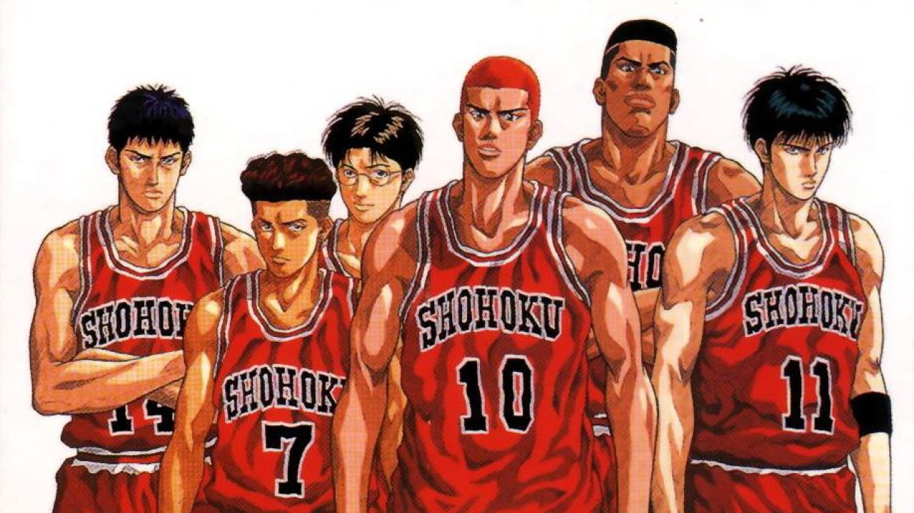

About Sakuragi
Hanamichi Sakuragi is the main protagonist of the Slam Dunk series. He plays as a Power Forward for the Shohoku High School basketball team.
Sakuragi and his friends
Sakuragi's Characteristics
- He's got red hair
- He didn't love basketball at first
- His rival is Kaede Rukawa
Sakuragi's Team
Shohoku High School has long been regarded as an underdog and a one-man team solely dependent on team captain Takenori Akagi, with no competition success whatsoever even at the prefectural level for two years running. It is not until Akagi's third and final year in the team that things begin to turn around for Shohoku, and they start to become a team to be reckoned with. They are the only non-seeded team to make it to the final four of the Kanagawa Inter-high Tournament, their sole loss being against eventual prefecture champion Kainan. Despite being the runner-up representative for Kanagawa, they are ranked as a C-class team and placed into a tough tournament bracket during the national championship, facing Toyotama and the reigning champion Sannoh. Shohoku favors a run and gun style of play and have a wide breadth of offensive capabilities. However, their major weakness is their weak bench, and as a result must rely completely on their starting lineup. Click on the links below to learn more about Slam Dunk.